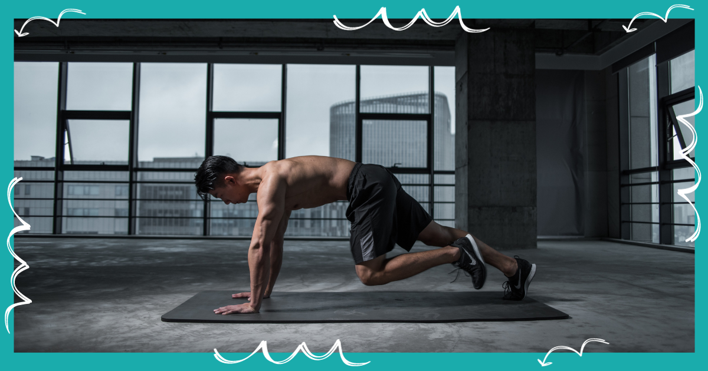
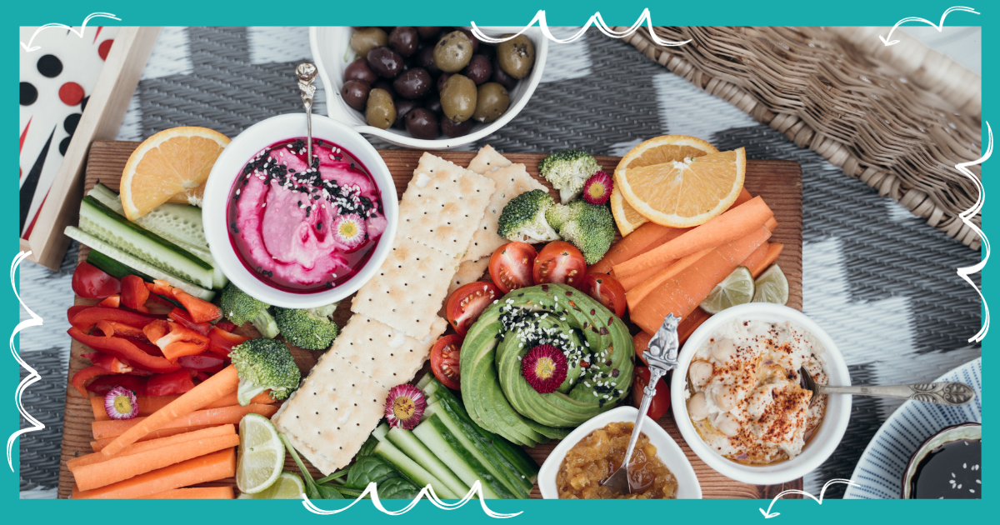
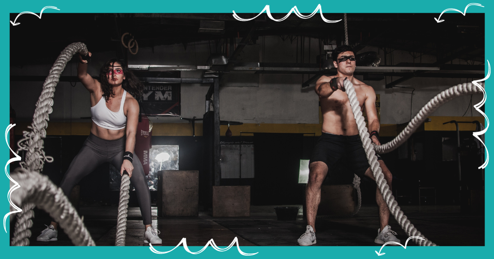

Explore Fitness Resources
Get fit and stay healthy with our workout routines, nutrition tips, and fitness challenges.
Workout Routines
Beginner's Workout:
- Jumping Jacks (15 reps)
- Bodyweight Squats (12 reps)
- Push-Ups (8 reps)
- Plank (Hold for 20 seconds)
- Bicycle Crunches (12 reps per side)
Cardio Blast:
- Running in Place (1 minute)
- Burpees (10 reps)
- High Knees (30 seconds)
- Jumping Lunges (12 reps per leg)
- Mountain Climbers (15 reps per leg)
Strength Training:
- Dumbbell Squats (10 reps)
- Push-Ups (10 reps)
- Bent-Over Dumbbell Rows (10 reps per arm)
- Dumbbell Lunges (10 reps per leg)
- Plank (Hold for 30 seconds)
Core Strengthening:
- Bicycle Crunches (15 reps per side)
- Russian Twists (12 reps per side)
- Leg Raises (10 reps)
- Plank (Hold for 40 seconds)
- Superman Pose (Hold for 15 seconds)
Advanced Training:
- Burpees with Push-Ups (10 reps)
- Dumbbell Squat Thrusters (10 reps)
- Pull-Ups (8 reps)
- Plyometric Push-Ups (8 reps)
- Russian Twists with Medicine Ball (15 reps per side)
Nutrition Tips
Nutrition plays a crucial role in your fitness journey. Here are some nutrition tips to support your overall health and fitness goals:
- Stay Hydrated: Drink plenty of water throughout the day to stay hydrated, especially before and after workouts.
- Eat Balanced Meals: Include a variety of foods in your diet, such as lean proteins, whole grains, fruits, and vegetables.
- Portion Control: Be mindful of portion sizes to avoid overeating.
- Pre-Workout Fuel: Consume a light, balanced meal or snack before your workout to provide energy.
- Post-Workout Recovery: After exercise, refuel with a combination of protein and carbohydrates to aid recovery.
- Avoid Processed Foods: Minimize the consumption of processed and sugary foods.
- Listen to Your Body: Pay attention to hunger and fullness cues to maintain a healthy relationship with food.
- Consult a Dietitian: For personalized nutrition guidance, consider consulting a registered dietitian.
Fitness Challenges
30-Day Plank Challenge:
Challenge yourself to a 30-day plank challenge. Start with a 20-second plank on day one and gradually increase the duration each day. By the end of the challenge, you'll be holding a plank for several minutes, significantly strengthening your core.
5K Training Challenge:
Dream of running a 5K race? Join our 5K training challenge. This program takes you from zero to 5 kilometers in just a few weeks. With a mix of walking and running, you'll build endurance and achieve your running goals.
Push-Up Challenge:
Push-ups are an excellent full-body exercise. Take our push-up challenge and see how your strength improves. Start with a manageable number of push-ups and add a few more each day. By the end of the challenge, you'll be amazed at your progress.
Yoga and Meditation Challenge:
Fitness isn't just about physical strength; it's also about mental well-being. Join our yoga and meditation challenge to cultivate inner peace and flexibility. Start with short sessions and gradually extend your practice over 30 days.
Healthy Eating Challenge:
Good nutrition is a fundamental part of fitness. Our healthy eating challenge encourages you to make mindful food choices for 30 days. Say goodbye to processed foods and embrace a diet rich in whole foods and nutrients.
Squat Challenge:
Strengthen your lower body with our squat challenge. Begin with a manageable number of squats and increase your reps daily. You'll notice improvements in your leg and glute strength by the end of the challenge.
Mindful Walking Challenge:
Walking is a simple yet effective form of exercise. Our mindful walking challenge encourages you to take daily walks while focusing on the present moment. Enjoy the benefits of improved mental clarity and physical health.
Bike to Work Challenge:
If you have access to a bike, consider our bike to work challenge. Replace your daily commute with a bike ride and experience the health and environmental benefits of cycling.